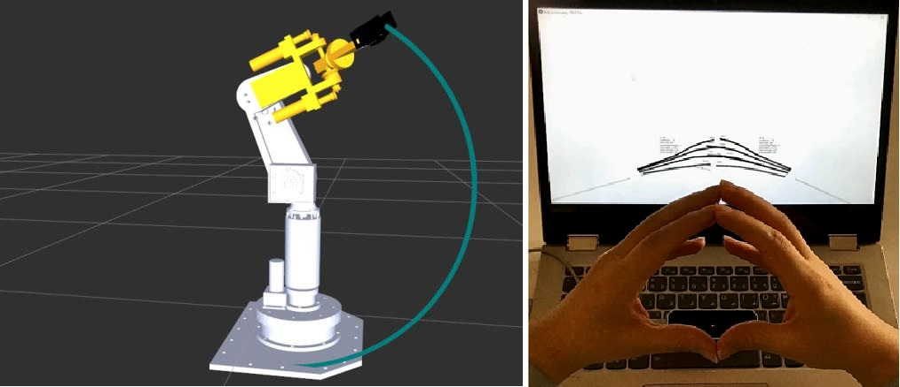
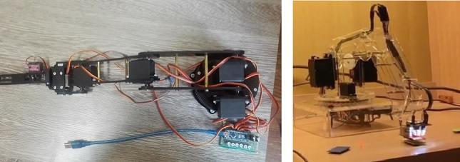

Projects
Improving UDRL
Upside-down reinforcement learning was introduced in 2020 by Jurgen Schmidhubber
and the first implementation demonstrated that this method can solve RL problems
and even outperform traditional methods in some complex sparse or partially observable environments. DQN and A2C agents
performed better than UDRL in LunarLander, but UDRL agents did solve the Sparse LunarLander. In TakeCover environments, this method had
much better performance and stability compared with mentioned agents. In UDRL, instead of predicting the reward, it is regarded as
an input command. The agent learns to get the specified reward within the specified time steps.
We suggested several modifications to improve the exploration and sample efficiency of this algorithm.
Noisy layer
adds parametric noise to the network to encourage exploration. The original paper
demonstrated that this modification improves the performance of DQN and A3C agents in many Atari environments.
Entropy maximization encourages a balance between exploration and exploitation and therefore, results in better performance.
Entropy can be considered as a measure of uncertainty in a system. Adding entropy to the loss function encourage the agents to be less
certain of certain actions, leading to more stochasticity and avoiding suboptimal policies.
In artificial curiosity and intrinsic motivation, reward signal is augmented with intrinsic reward in different ways
including learning process, compression process, information-theoretic measures, prediction error, surprise-based, and visitation count.
Pixels, random features, variational auto-encoders, and inverse dynamic model were used in the prediction error method for intrinsic reward
without considering extrinsic reward in this paper.
we used dynamic model for intrinsic reward because, despite simplicity, it performed well in many environments. Furthermore,
combining this method with UDRL algorithm requires little change and additional computation.
UDRL algorithm turns RL problems into supervised learning problems and episodes can be viewed as sequential data.
Therefore, utilization of recurrent networks is easily possible with little modification. Recurrent networks can recognize possible
sequential patterns in environments and improve the sample efficiency of UDRL algorithm. LSTM, GRU, and particularly
ClockWork RNN were considered for this purpose.
In the original algorithm, fixed numbers are used as hyperparameters
for the number of episodes and updates in each iteration. In some environments like CartPole and Pong,
episode length has a correlation with the agent’s performance. In addition, in different environments episode length varies
and the number of updates should be tuned respectively. To deal with these issues,
we propose proportional number of updates.
The comparison of our improved version with the basic method is illustrated in the below figure, as an example.
5 random seeds were used in the simulation and the shaded area represents mean±std.

Deep ClockWork RNN
Similar to a simple recurrent neural network, Clockwork RNN consist of input, hidden, and output layers. The difference between simple RNN and Clockwork RNN is that neurons in the hidden layer are partitioned into g modules with clock period Tnϵ{T1,…,T2}. These modules are internally fully connected, but recurrent connections only exist from slower modules to faster ones. At each time step, only the modules that the remainder of dividing time step by module’s time period become zero are active (t MOD Ti=0). Therefore, low-clock-rate can recognize long-term patterns in sequential data and keep information in memory. Fast-clock-rate modules are able to focus on high frequent information. The next figure illustrates the architecture of this network. In deep Clockwork RNN, the output layer is omitted and the hidden layer becomes the input for the next layer. Therefore, many layers with different numbers of modules, number of neurons, and time periods can be stacked together. The hidden state of each layer is stored for the next prediction. The initial hidden state for each layer is considered to be zero.
Self-supervised RL
Self-supervised reinforcement learning (SSRL) is a new algorithm that tries to simplify RL problems by self-supervision and supervised learning methods. A policy (neural network) is used to map states to actions and a small ranking buffer is used to store trajectories with high returns. The policy is trained using the data stored in the buffer. The key idea of SSRL is to keep asking the question “what data are more likely to be sampled by a policy that is better than the current policy. Despite the simplicity, this algorithm can compete with state-of-art RL algorithms in different environments. Moreover, this algorithm is more stable, less sensitive to hyperparameters and faster to train. Also, it can be used for both discrete and continuous action space. The next figure illustrates the performance of this algorithm in several environments. 5 random seeds were used in the simulation and the shaded area represents mean±std.
SMC on 6R robot with EtherCAT
Sliding mode controller (SMC) is a common non-linear control method known for robustness and stability. First,the dynamic model of the robot is derived using the Lagrange method. Based on the model and Lyapunov stability theory, the controller is designed. For resolving the chattering issue, Tanh function is used instead of sign in the correctional term. This method is computationally expensive and microcontrollers are not suitable for implementation. EtherCAT is an Ethernet-based Fieldbus system developed by Beckhoff. The goal during the development of EtherCAT was to apply Ethernet for automation applications requiring short data update times. The computer was considered as the master. Two Arduino with EasyCAT boards were used as a slave, one for reading the sensors (potentiometer), filtering and transfering states to the master, the other for controlling the actuators (motors) according to the command received from the master. There was no packet loss and the controller cycle was 5 ms. The right picture shows a network used for testing the communication between boards and the computer. The left picture shows the robot.
Controlling 6R robot with Leap Motion in ROS
The Robot Operating System (ROS) is a flexible framework for writing robot software.
It is a collection of tools, libraries, and conventions that aim to simplify the task of creating complex and robust robot behavior
across a wide variety of robotic platforms. First, we model the robot in SolidWorks and convert the model to UDRL format. MoveIt package
was used to read the UDRL file and create files necessary for simulation in the MoveIt and Gazebo.
Rosserial package was used for communication between ros master on the computer and the Arduino board used for controlling the robot.
We could control the robot and generate a path online from the computer. The default PID controller in ROS was used.
The Leap Motion Controller is a small USB peripheral device
that can detect the position and orientation of hand and fingers. Using two monochromatic IR cameras and three infrared LEDs,
the device observes a roughly hemispherical area, to a distance of about 1 meter. The LEDs generate pattern-less IR light
and the cameras generate almost 200 frames per second of reflected data. We used Leap Motion to control the robot by hand and touchless.
The center of the palm was considered for controlling the position of the robot.

Automatic path planning of spraying robot
This was an industrial project. They use a SQ 15_06N manipulator for spraying different parts in the factory.
The employer wanted a program capable of generation and simulation of default paths in the robot such as linear, circular, zigzag,
and an algorithm for automatic path generation. At first, we used MATLAB GUI to develop software from scratch.
We modeled the manipulator in SolidWorks and read the STL files and assembled them. We defined some basic paths and commands
in the program so that the user can program the robot offline. For automatic path generation, the algorithm first slices the part into several parallel planes.
For each plane, the outer surface is determined and an offset with specified length is derived.
These offsets are simplified into the points and the path consists of the movement between these points.
The user can export the program and run it on the robot. The next picture shows the software.
We generated paths for several simple parts. The next picture shows the generated path for half-cylinder and half sphere as an example.
 Unfortunately, the software had several drawbacks and was not practical. It was slow and couldn't detect collision. We used
RoboDK alternatively. The software support many industrial manipulators by default,
but not SQ manipulators. We modeled the manipulator from SolidWorks files and we edit the post processor for exporting
robot programs. The same algorithm was implemented using Python in RoboDK.
Unfortunately, the software had several drawbacks and was not practical. It was slow and couldn't detect collision. We used
RoboDK alternatively. The software support many industrial manipulators by default,
but not SQ manipulators. We modeled the manipulator from SolidWorks files and we edit the post processor for exporting
robot programs. The same algorithm was implemented using Python in RoboDK.
DLCC of Hyundai HS165
Hyundai HS165 is an industrial manipulator used mainly for spot welding. Kinematics, dynamics, and dynamic load-carrying capacity (DLCC) are investigated in the project. First, we analyzed the software, hardware, and programming of this manipulator. Direct Kinematic is derived using DH parameters. An analytical solution was suggested for inverse kinematics. The kinematic model is validated by the simulation software from the company, HRSpace, and the robot. The path was discretized into points and a robot program is generated. At each point, the robot stopped for seconds so that we could record the states, position of the manipulator. The Lagrange method was used to derive the equation of motion and the dynamic model. Open-loop DLCC was calculated for standard and non-standard trajectories, in standard trajectory the manipulator starts with zero velocity and it accelerates until it reaches the maximum velocity, then then decelerates until it stops. In open-loop DLCC, torques and forces are computed for a trajectory without considering the controller. Open-loop DLCC is determined if one of the motors saturate in the smallest given payload.In determining the closed-loop DLCC, the controller is considered, in our case we used SMC. For standard trajectory, open loop and close loop DLCC were almost the same while for non-standard trajectories they varied a lot. An inclined circular trajectory is used according to ISO9283 and the calculated DLCC was 163 kg (nominal payload is 165 kg according to catalog). The next pictures show the robot and the controller. The inclined circular path and the torques for the second joint are illustrated in the next picture.
Kinematic, dynamic, and control analysis of 3UPS/S robot
In a parallel robot, the moving platform is connected to the fixed base through several serial chains. Most of the joints in a parallel robot are not actuated, and many of these passive joints have several degrees of freedom (e.g., spherical, universal, and planar joints). In the 3UPS/S mechanism, the moving platform is connected to the base through three kinematic chains, the prismatic link is connected to the base by a universal joint and is connected to the moving platform by a spherical joint. This link is actuated and can move linearly. The c.g of the moving platform is fixed by a spherical joint. The inverse kinematics, singular points, and workspace are investigated. The kinematic model is compared with ADAMS for evaluation. The dynamic model is derived using Kane and Lagrange methods. In the Lagrange method, the kinetic energy related to the angular motion of the links is discarded. The Kane method resulted in a more accurate model when compared to ADAMS. PID and computed torque controller were simulated. For the computed torque controller, the dynamic model derived from the Lagrange method was used. computed torque controller had much better performance than PID controller. The left picture shows the schematic of the robot and the right one shows the model in ADAMS.
2d Drawing CNC
We designed and made a 2d CNC for drawing with different colors. We used RAMP1.4 with Arduino mega, 2 step motors (400 steps/rev), servo motors for each color, and drv8825 step drivers. I was in charge of electronics and programming, I used a modified version of Marlin and GRBL to control the machine. We used LightBurn software for creating G-code and develop a MATLAB app to modify the G-code so that the right tool number and offset are applied. The next picture shows the first version.
Controlling robotic arms
We designed, made, and control several robotic arms for class projects. I helped the team in the design and electronics of the robots. We used servo motors and plexiglass in our design. The first robot has 5 degrees of freedom and a two-finger gripper. The second is a 3R robot with parallel links. At the end effector of this robot, a magnet and a color sensor are used. This robot was used for separating objects according to their colors. 
Measuring c.g. of baseball bats
For the measuring system course, we made a device for measuring the center of mass of objects, especially baseball bats. We used two loadcells to measure the inserted force. Total mass is the sum of masses measured by loadcells and by considering the equilibrium condition, the center of mass of the object is calculated.